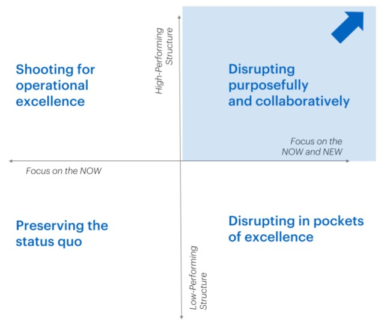
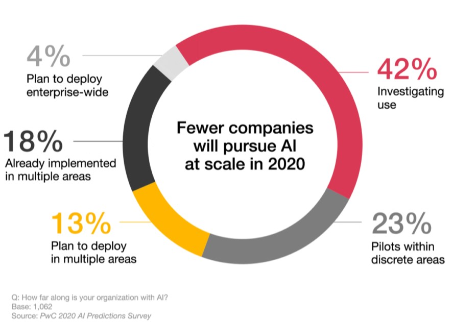

Organizational Innovation Context


An Artificial Intelligence service provider should be focused on the "NOW and NEW" in a high-performing way.
Due to the nature and early stage of the product, they will be disrupting purposefully and collaboratively.
There is a risk, however, that they will become complacent after a breakthrough innovation.
There is a risk, however, that they will become complacent after a breakthrough innovation.


Organizations are broadly aware of Artificial Intelligence, and most are considering use. However, only 18% have already implemented
it beyond a discreet pilot, and only about 1 in 3 plans on wide deployment as of 2020.